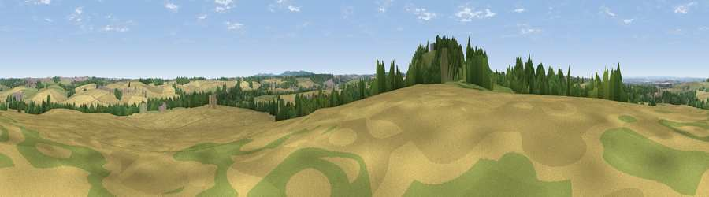

Viewpoint near Breedon on the Hill
#25898 in England · top 34% of its area beats it · near Breedon on the HillWhere it is
The exact computed spot (SK 40925 23775). Click the marker for map links.
The view, rendered

A 360° render of this exact spot computed from the terrain model, tree cover and land cover — summer colours, afternoon light, calibrated against photographs of famous viewpoints. Real trees, hedges and buildings will differ in detail.
The panorama
Grey silhouette: terrain skyline in each direction (720 bearings, Earth curvature and refraction included). Dashed green: skyline with trees (+15 m) and buildings (+8 m) as obstacles. Blue strip: how far the ground is visible on each bearing.
Where the view opens
Wedge length = distance to the farthest visible ground on that bearing (vegetation-aware). Rings at 10, 25 and 50 km.
What fills the view
51% cropland · 25% grassland · 21% woodland · 3% built-up
Angular shares of the visible panorama (visual magnitude), not map area. Landscape diversity 0.49 (0–1 Shannon).
Key numbers
More beautiful places nearby
The staircase of upgrades: each row has a higher view potential than everything closer. Driving times are estimates from straight-line distance, calibrated against real road routing — check an actual route before setting out.
| Place | Direction | Drive | Score |
|---|---|---|---|
| Breedon Hill | SW · 1 km | ~2 min | 55.4 |
| Viewpoint near Hartshorne | WSW · 8 km | ~15 min | 57.6 |
| Viewpoint near Whitwick | SSE · 8 km | ~15 min | 63.5 |
| Viewpoint near Whitwick | SSE · 8 km | ~16 min | 71.2 |
| Ives Head | SE · 10 km | ~19 min | 73.3 |
| Viewpoint near Stanton under Bardon | SSE · 12 km | ~22 min | 76.0 |
| Viewpoint near Woodhouse Eaves | SE · 13 km | ~25 min | 77.7 |
| Viewpoint near Mow Cop | WNW · 64 km | ~87 min | 80.2 |
52.80998, -1.39430 · source: screening · position refined by local search. Computed location — check access rights before visiting.